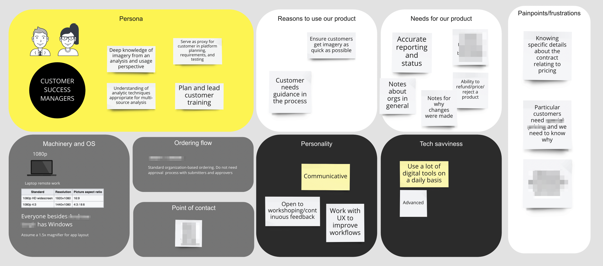
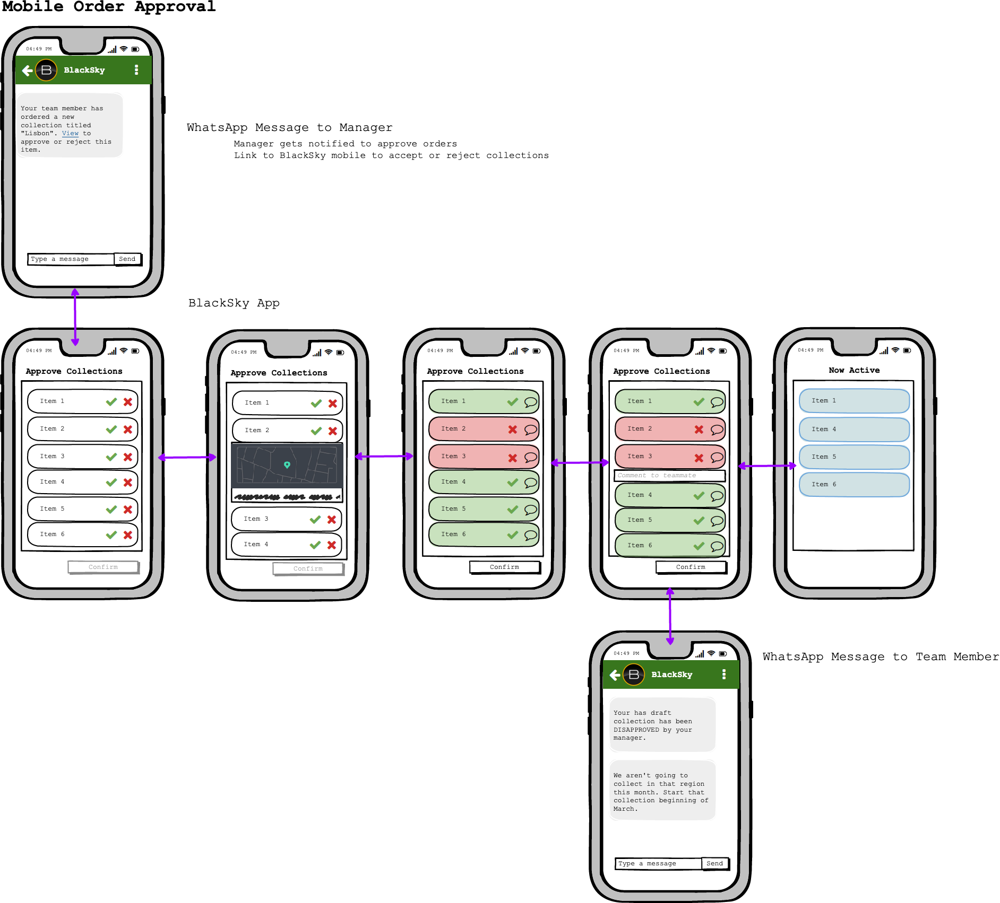

ROLE: Principal UX Designer
Other hats at the company: Project Manager and Systems Engineer
About: BlackSky is a global monitoring services combine state-of-the-art artificial intelligence, cloud computing, multi-sensor data fusion, activity analysis, and autonomous satellite tasking to rapidly deliver essential alerts to those who need to know. I joined the company when the company was less than 80 people, as the first ux designer. I worked to integrate UX within the engineering team and was able to evangelize and spearhead a number of UX agile processes at the company. UX has now been underscored as a necessary and influential factor to BlackSky's positive customer experience.
Skills: GIT, Github, Figma, Adobe XD, Sketch, Sematic HTML, WCAG Compliance, JavaScript, CSS, PhotoShop, Adobe Illustrator, Balsamiq, Miro, Mural, Invision, Zeplin
My Process:
What is the problem?
- Who are we designing for?
- What are the problems that they face?
- How can we go about solving those problems?
- Why might our solution not work?
- What can we do about that?
- Why was a decision made by our team or company?
There
are many questions to be asked before, during, and after a product is created or redesigned.
Who is the user? Empathize with the user
User story mapping to hypothesize workflows
Customer journey maps: Make note of thoughts, actions, and emotions of user
Get validation and feedback from customer
Ideate
Ideate: Look at low fidelity prototypes
Mobile application
Learn from prototypes to spark new ideas.
Desktop application
Test, test, and test as much as possible
Usability tests reveal insights that redefine the problem
High Fidelity
Assist developers during implementation to match UI Design
Mobile: Demonstration of how to submit orders

Mobile: Demonstration of how to approve orders